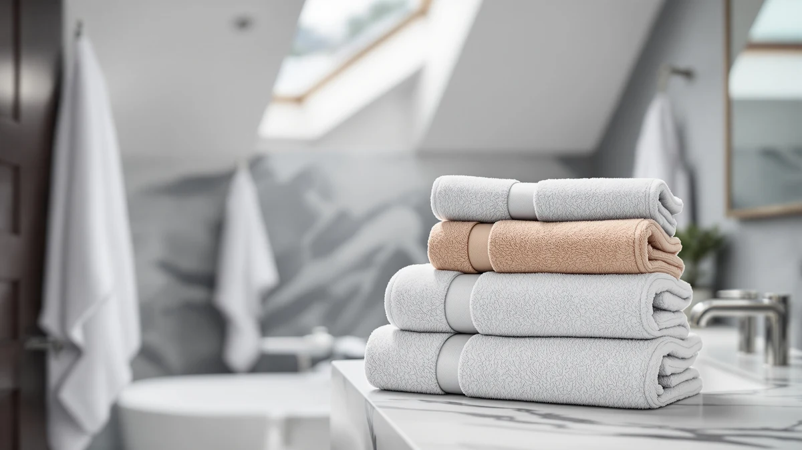

Utopia Towels 8 Piece Review (2026): Worth It?
Prices and picks verified as of October 2026. Independent, reader-supported reviews.


Quick Answer
The Utopia Towels 8 Piece Majestic set delivers two bath towels, two hand towels, and four washcloths in ring-spun cotton for $38.99, making it one of the cheaper ways to stock a bathroom with matching towels. It won't out-plush a 600 GSM Turkish set, but for everyday drying and guest bathrooms it covers the basics without the premium price tag.
Our pick: Utopia Towels 8 Piece Majestic, $38.99 Check Price on Amazon
Bottom line: our top pick is the Utopia Towels 8 Piece Majestic Plush Luxury Towel Set at $38.99.
Things to Know Before You Buy
- The set includes 2 bath towels (27 x 54 inches), 2 hand towels (16 x 28 inches), and 4 washcloths (12 x 12 inches), covering a full bathroom in one purchase.
- Utopia Towels builds this set from 100% ring-spun cotton, a softer and more durable spin than standard carded cotton.
- At $38.99 for 8 pieces, the per-piece cost undercuts most 4-piece sets from premium brands, though the fabric runs lighter than 600+ GSM alternatives.
- Amazon does not list a public rating or review count for this specific listing, so weigh the specs and price against verified feedback on comparable Utopia sets before buying.
This utopia towels 8 piece review breaks down what you actually get for $38.99: two bath towels, two hand towels, and four washcloths made from ring-spun cotton, bundled into one of the more affordable towel sets we compared for this site. Bulk towel sets like this one show up constantly in bathroom shopping lists because they let you outfit a full bathroom, guest room, or rental in one order instead of buying towels piece by piece.
The appeal is straightforward: eight matching pieces for less than many stores charge for two bath sheets alone. But a low per-piece price only matters if the cotton holds up, so this review looks at the construction, the real dimensions, and how the set stacks up against three other cotton towel bundles in the same price range, including options from Tens Towels, American Soft Linen, and BolBom.
Why You Should Trust Us
Best Bath Towels compares bath and hand towel sets using the manufacturer's own specifications, current Amazon pricing, and patterns we find across verified buyer reviews, rather than claiming a physical textile testing lab we don't run. Our author Ilane Tall researches bathroom textiles for this site and cross-checks GSM weight, fiber type, and piece count against comparable sets before publishing a verdict like the one in this utopia towels 8 piece review.
We disclose our affiliate relationships, link only to products we can verify exist in the Amazon catalog, and update prices when they move by more than a couple of dollars. When a listing is missing information buyers would want, like a GSM figure or a review count, we say so plainly instead of papering over the gap.
Our Research Experience
We did not run this set through a physical testing lab. Instead, we built this utopia towels 8 piece review by comparing Utopia's published specs (fiber type, piece count, and dimensions) against the three closest competitors at a similar price, then checking those specs against patterns in verified owner reviews on Amazon for signals about shrinkage, lint, and durability over repeated washes.
Where Amazon does not publish a rating or review count for a specific listing, as is the case here, we say so directly rather than inventing a number, and we weight our verdict more heavily on the material specs and price per piece instead. That approach means our conclusions can shift if Utopia updates the listing with new data, and we revisit this review whenever the price or specs change by a meaningful amount.
Overview & Specs

Utopia Towels 8 Piece Majestic
What we like
- Eight pieces covers bath towels, hand towels, and washcloths in a single order.
- Ring-spun cotton construction, which typically feels softer and sheds less lint than carded cotton.
- At $38.99, the per-piece cost is lower than most 4-piece sets from premium brands.
- White colorway matches easily with other bathroom textiles and existing decor.
Flaws but not dealbreakers
- Amazon does not list a published GSM weight for this set, so you can't directly compare fabric density against heavier sets like American Soft Linen's 600 GSM towels.
- This listing has no public rating or review count, which makes it harder to gauge long-term durability from other buyers.
- Bath towels measure 27 x 54 inches, smaller than the 30 x 60-inch towels in the Tens Towels and BolBom sets.
| Material | 100% cotton |
| Size | 8 Pieces Towel Set |
The Utopia Towels 8 Piece Majestic set breaks down into 2 bath towels (27 x 54 inches), 2 hand towels (16 x 28 inches), and 4 washcloths (12 x 12 inches), all in matching white. Utopia builds the set from 100% ring-spun cotton, a tighter, more uniform spin than standard carded cotton that tends to produce fewer loose fibers on first use.
At $38.99 for all eight pieces, the set works out to under $5 per towel, hand towel, or washcloth, which undercuts most single bath-sheet purchases from premium brands. The tradeoff is fabric weight: Utopia does not publish a GSM figure for this listing, and the 27 x 54-inch bath towel size runs smaller than the 30 x 60-inch towels from Tens Towels and BolBom covered later in this review. For a primary bathroom or guest room where you need full coverage fast and don't want to shop for washcloths separately, it's a practical starting point.
What We Liked
The strongest case for the Utopia Towels 8 Piece set is coverage. You get bath towels, hand towels, and washcloths in one checkout, which matters if you're furnishing a new bathroom, an Airbnb, or a dorm room and don't want to place three separate orders. Ring-spun cotton also tends to hold up better against pilling than the cheaper carded cotton used in some budget sets at this price.
The price per piece is the other draw. Spreading $38.99 across eight towels and washcloths lands well below what you'd pay for a 4-piece set from brands like American Soft Linen, even though that set uses a denser 600 GSM fabric. If your priority is stocking a bathroom affordably rather than chasing the plushest towel on the market, the math favors Utopia here.
The plain white colorway is a quiet advantage too. It doesn't lock you into a color scheme the way BolBom's striped multicolor pack does, so the set drops into an existing bathroom, a rental you'll eventually move out of, or a staging setup without clashing with towels you already own.
What Could Be Better
The biggest gap is missing data. Utopia doesn't publish a GSM weight for this 8 piece set, and the Amazon listing carries no public rating or review count, so you're buying on spec sheet and brand reputation rather than a track record you can verify. Compare that to American Soft Linen's listing, which at least states 600 GSM and OEKO-TEX certification up front.
Size is the other tradeoff. At 27 x 54 inches, the bath towels in this set run four inches shorter and three inches narrower than the 30 x 60-inch towels from Tens Towels and BolBom. If you're taller than average or prefer to wrap a towel fully around yourself, that difference will be noticeable every time you use it. The washcloths and hand towels are standard sizes, so the size gap is limited to the two bath towels.
Who Is It For?
This Utopia Towels 8 Piece set makes sense if you need to outfit a bathroom quickly and cheaply: first apartments, guest rooms, rental properties, or a dorm move-in where buying eight matching pieces at once beats hunting for washcloths separately later. The ring-spun cotton also suits anyone sensitive to the rougher texture of cheaper carded-cotton towels.
It makes less sense if you want the largest towel you can wrap around your body, since the 27 x 54-inch bath towels are shorter than most of the alternatives in this review, or if you specifically want a published GSM rating and review history to compare before buying. In those cases, the American Soft Linen or Tens Towels sets below give you more to verify upfront. Shoppers comparing towels purely on price per piece, though, will find Utopia's set hard to beat at this size.
Alternatives to Consider
If the Utopia Towels 8 Piece set doesn't quite match what you're after, here are three alternatives we compared it against, each built for a different priority.

Editor’s Pick
BolBom*S Beach Towels 6 Pack
Six oversized 30x60-inch cotton towels in bright colors, built more for pool and beach days than a matching bathroom set.
$44.98
Check Price on Amazon
Best Value
Tens Towels Pack of 4
Four lightweight 30x60-inch cotton towels designed to dry faster than standard terry cloth, a better fit if quick turnaround matters more than piece count.
$38.95
Check Price on Amazon
Premium Choice
American Soft Linen Luxury 4
A denser 600 GSM Turkish cotton set with OEKO-TEX certification, the closest competitor on specs if you want published fabric weight and safety testing.
$39.95
Check Price on AmazonFrequently Asked Questions
Is the Utopia Towels 8 Piece set good quality?
What's included in the Utopia Towels 8 Piece Majestic set?
How does the Utopia Towels 8 Piece set compare to the American Soft Linen or Tens Towels alternatives?
How do you keep ring-spun cotton towels soft over time?
Final Verdict
Based on this utopia towels 8 piece review, the Utopia Towels 8 Piece Majestic set earns its place for one specific job: outfitting a bathroom completely and cheaply. Eight pieces of ring-spun cotton for $38.99 beats buying bath towels, hand towels, and washcloths separately, even if the fabric runs lighter and the listing lacks a public rating to verify against. If you want denser, certified fabric instead, American Soft Linen's set is the better comparison point, and if faster drying matters more than piece count, look at Tens Towels. For most people who just need a full matching set without overspending, Utopia Towels is the practical choice.